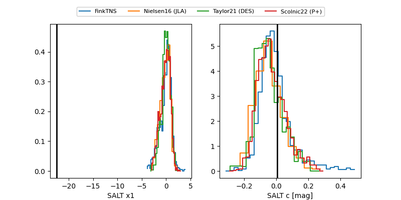

FINK: ZTF25abmwtps
Lasair: ZTF25abmwtps
ALeRCE: ZTF25abmwtps
ZTF25abmwtps (ztf,fink)
equatorial (ra, dec) = (1.2629,-6.42718)
galactic (l, b) = (92.8064,-66.54667)

last atlasc=19.52, ztfg=19.84, ztfr=19.98
1 atlasc, 1 ztfg, 1 ztfr detections